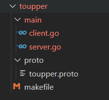
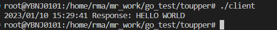
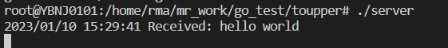

grpc
gRPC 是一个高性能、开源、通用的RPC框架，由Google推出，基于HTTP2协议标准设计开发，默认采用Protocol Buffers数据序列化协议，支持多种开发语言。gRPC提供了一种简单的方法来精确的定义服务，并且为客户端和服务端自动生成可靠的功能库。
原理
最底层为TCP或Unix套接字协议，在此之上是HTTP/2协议的实现，然后在HTTP/2协议之上又构建了针对Go语言的gRPC核心库（gRPC内核+解释器）。应用程序通过gRPC插件生成的Stub代码和gRPC核心库通信，也可以直接和gRPC核心库通信。
安装
安装protoc
ubuntu环境
1 | apt install protobuf-compiler |
安装插件
安装插件的目的是为了将protobuf文件，生成Go代码
1
2$ go install google.golang.org/protobuf/cmd/protoc-gen-go@v1.26
$ go install google.golang.org/grpc/cmd/protoc-gen-go-grpc@v1.1设置插件环境变量
1
$ export PATH="$PATH:$(go env GOPATH)/bin"
验证插件是否成功
1
2
3# 查看protoc-gen-go版本
$ protoc-gen-go --version
protoc-gen-go v1.26.0查看protoc-gen-go-grpc版本
1
2$ protoc-gen-go-grpc --version
protoc-gen-go-grpc 1.1.0
使用
编写一个使用grpc进行大小写转换的程序，其目录结构如下

定义protobuf文件
1 | syntax = "proto3"; |
执行protoc命令
1 | protoc --go-grpc_out=. --go_out=. proto/toupper.proto |
toupper.pb.go部分代码
1 | package toupper |
toupper_grpc.pb.go部分代码
1 | // Code generated by protoc-gen-go-grpc. DO NOT EDIT. |
业务server端代码
1 | package main |
业务client端代码
1 | package main |
执行
1 | # go mod init toupper |
运行结果如下

